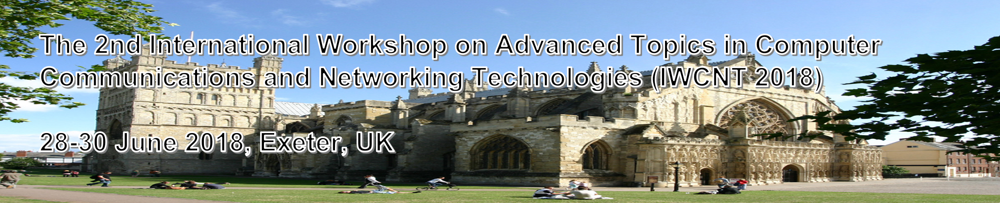

The 2nd International Workshop on Advanced Topics in Computer Communication and Networking Technologies (IWCNT-2018) is held in conjunction with The 20th International Conference on High Performance Computing and Communications (HPCC-2018), 28-30 June 2018, Exeter, UK
Scope and Interests
The IWCNT-2018 workshop consists of invited peer-reviewed papers in emerging ideas and trends in the frontier of computer communications from both the research community as well as the industry.
This workshop aims at providing an additional forum within HPCC-2018 for presenting, exchanging and discussing the most recent advances in different aspects of communications and networking technologies and applications, including:
- Big data in networks
- Future networks
- Wireless networks
- Green networking
- Trust, Security and Privacy in future networks
- Network function virtualization
- AI in networks
- Software-defined networks
- Low-power wireless
- Embedded networked systems
- Ad hoc networks
- Cyber-Physical Systems and Internet of things
Important Dates
Submission Deadline: Invitation only from peer-review results
Author Notification: 23 March 2018
Camera-Ready Paper Due: 25 May 2018
Early Registration Due: 25 May 2018
Paper Submission Guideline
Invited authors should submit a full paper of 6 pages (with 2 extra page purchase allowed), including all figures, tables and references. The authors should follow the instructions of the "Online Author Kit" at the IWCNT-2018 website for the preparation of the final manuscript. The author registration date and the final manuscript due date are strict. Please do follow the announcements on the HPCC-2018 web site.
Accepted papers will be included in the main conference proceedings to be published by IEEE Computer Society Press. Each accepted paper must have one Author Registration for publication in the proceedings.
Organization Committees
Zhiwei Zhao, University of Electronic Science and Technology of China, China
Haozhe Wang, University of Exeter, UK
Chang Shu, University of Electronic Science and Technology of China, China